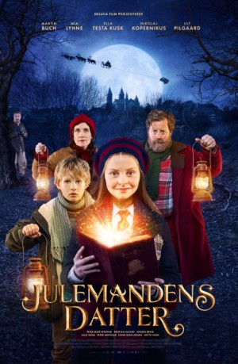

IMDB-Wertung: 6.8 / 10
IMDB-Wertung: 6.8 / 10  Metascore:
Metascore: 
Alternativ: All I Want for Christmas (Englischer Titel)
 IMDB-Wertung: 6.8 / 10 Metascore:
Jahr: 2018
Dauer: 92 Minuten
FSK: 6
Land: Dänemark Studio: Koch MediaTonspuren:
Untertitel: Deutsch,
Auflösung: 1080p (1920x800) Größe: 3604 MB
Genre: Familie, Weihnachten
Regisseur: Christian Dyekjær
Drehbuch: Uffe Rørbæk Madsen
Soundtrack: Kristian Eidnes Andersen, Nicklas Schmidt
Darsteller:
 Nicolaj Kopernikus als Gorm
Nicolaj Kopernikus als Gorm Peter Gantzler als Santa Claus
Peter Gantzler als Santa ClausDatei: X:\2018(G-M)\Lucia und der Weihnachtsmann (2018, FSK6, 1920x800).mkv seit 11.11.2019
Festplatte: HD 2018(G-Z)-2019(A-Z)
 Es gibt insgesamt 138 Filme in der Gruppe '2018(G-M)'
Es gibt insgesamt 138 Filme in der Gruppe '2018(G-M)'